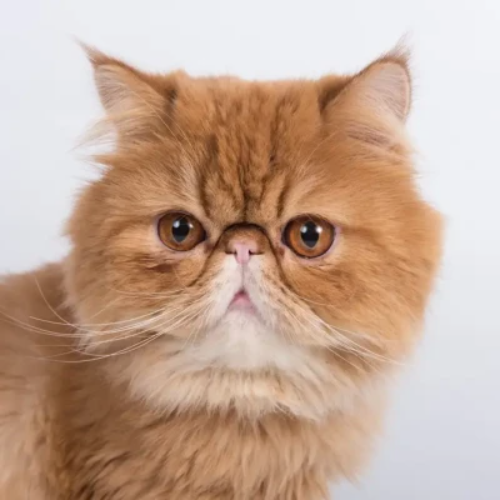

The page features four adorable cats, each bringing charm and coziness. Whether they’re curled up, playfully pouncing, or gazing wide-eyed, these cute felines add a warm, delightful touch that makes browsing a joy.
Notable cats from the web
Mochi
A soft, squishy ball of fluff with a mysterious past.
Mochi was found napping in a ramen shop in Kyoto and hasn’t stopped eating since. Her favorite activity is loafing in sunbeams and judging your life choices. She’s got a PhD in Napping and a minor in Stealth Purring. Loves cardboard boxes and jazz music.
Nimbus
A cloud with claws.
Nimbus is a silver-gray Persian who looks like a storm but acts like sunshine. Born during a thunderstorm, he's convinced he controls the weather. Known for dramatic entrances and sleeping on freshly folded laundry, Nimbus enjoys watching rain and pretending to be aloof (but secretly loves cuddles).
Ziggy

Tiny paws, big dreams.
Ziggy once tried to ride a Roomba into battle. A chaotic good tabby with a lightning bolt marking on his back, he was named after Ziggy Stardust for his love of nighttime zoomies. Favorite hobbies include knocking over water glasses and philosophizing at 3am.
Peppercorn
A spice, a menace, a legend.
Peppercorn is a tuxedo cat with a villainous mustache and the attitude to match. Once tried to hack into a laptop by walking across it repeatedly. Has a soft spot for string cheese and hates cucumbers with a passion. Rumor has it, she once led a gang of alley cats in a daring fish heist.
“Humans spend years searching for purpose. I found mine in 12 seconds: knocking a glass off the table and pretending it wasn’t me.”
— Whiskers T. Fluffington, author of "The Art of Doing Nothing (and Being Worshipped for It)